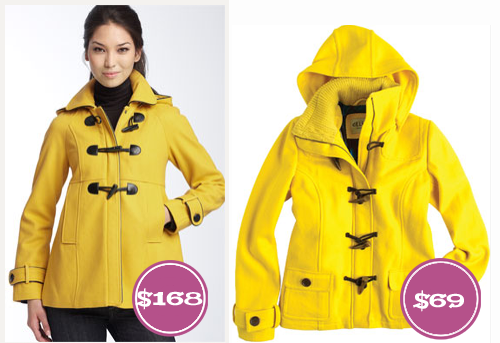
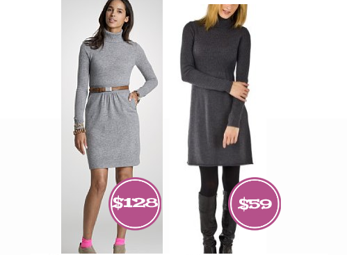
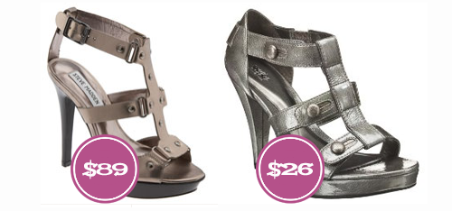

WHAT UP Ladies and Gents of the internet world!? My name is Der, well really its Amanda, but I have been given a nickname some time ago and well.. it stuck, whether I like it or not ( I don’t, by the way. Imagine your husband slipping and introducing you to all his co-workers or new friends as Der…real elegant sounding). Here is the brief evolution if you will: Amanda…Manders…Mander…Der. Got it? Good. You can read more about me right here.
So back to biznass… I love to shop, I mean LOVE… like if you could marry shopping, I would. I also love to find a bargain, deal, knock-off… you get the idea. So, my gameplan revolves around me showing all of you these marvelous deals that I happen upon, so you don’t waste your hard earned monies on something when you can actually get an identical item for MUCH less. So… here we go…my favorite things right now, complete with much more cost effective options for you frugalistas like me.
So back to biznass… I love to shop, I mean LOVE… like if you could marry shopping, I would. I also love to find a bargain, deal, knock-off… you get the idea. So, my gameplan revolves around me showing all of you these marvelous deals that I happen upon, so you don’t waste your hard earned monies on something when you can actually get an identical item for MUCH less. So… here we go…my favorite things right now, complete with much more cost effective options for you frugalistas like me.

Steve Madden, Toggle Coat ($168) or Delias, Emma Toggle Coat ($69)
 or Converse One Star, Sport Shirt ($19)")
James Perse, Contrast Panel Shirt ($144) or Converse One Star, Sport Shirt ($19)

J.Crew, Dream lycée turtleneck dress ($128) or Merona Collection, Womens Turtleneck Sweater Dress ($59)

Steve Madden, “Findd” Sandal ($88) or Mossimo, Paulina Gladiator Sandal – Grey Patent ($26)


Recent Comments